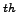
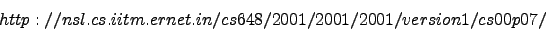

M. Sakthi Balan
Personal Information
Date of birth : September 08, 1974
Sex : Male
Marital Status : Married
Nationality : India
Status in Canada : On Work Permit
Office Address : Department of Computer Science, University ofWestern Ontario
London, Ontario, Canada N6A 5B7
Home Address : 459, Platts Lane, Apartment No. 22, London, Ontario
Canada N6G 3H2
Phone : 519-432-0998 (Home), 519-661-2111 Ext 86278 (Office)
E-mail : sakthi@csd.uwo.ca
Homepage : http://www.csd.uwo.ca/~sakthi
Career Objective
My primary ambition is to do research and teaching in the field of computer science.
Academic Background
| Degree/Position |
Institute/University |
Year |
Grade |
| Postdoctoral Fellow |
University of Western Ontario, London |
April 2005 - |
|
| |
Ontario, Canada. |
till date |
|
| |
Advisor: Prof. Helmut Jürgensen |
|
|
| Visiting Researcher |
University of Western Ontario, London |
August 2004 - |
|
| |
Ontario, Canada. |
March 2005 |
|
| PhD in Computer Science |
Indian Institute of Technology, Madras |
2004 |
8.4/10 |
| and Engineering under |
Chennai - 600036, India. |
|
|
| Infosys Fellowship |
Advisor: Prof. Kamala Krithivasan |
|
|
| MS (by research) |
Indian Institute of Technology, Madras |
2000 |
8.4/10 |
| in Computer Science and |
Chennai - 600036, India. |
|
|
| Engineering |
Advisor: Prof. Kamala Krithivasan |
|
|
| MSc (Mathematics) |
Manonmaniam Sundaranar University |
1997 |
86% |
| |
Tirunelveli, Tamil Nadu, India. |
|
|
| BSc (Mathematics) |
Manonmaniam Sundaranar University |
1995 |
87% |
| |
Tirunelveli, Tamil Nadu, India. |
|
|
| All India Senior School |
Sri Jayendra Swamigal |
1992 |
80% |
| Certificate Examination |
Silver Jubilee School |
|
|
| |
Tirunelveli. |
|
|
| All India Secondary |
Sri Jayendra Swamigal |
1990 |
83% |
| School Examination |
Silver Jubilee School |
|
|
| |
Tirunelveli. |
|
|
Academic Achievements
- Reviewed research papers for
- Journal of Theoretical Computer Science (TCS).
- International Journal of Unconventional Computing.
- 11 International Meeting on DNA Computing.
- 12 International Conference on Implementation and
Application of Automata.
- Recipient of Infosys Technologies, India fellowship for doing
PhD in the Department of Computer Science and Engineering, Indian
Institute of Technology, Madras, 2000-2004.
- Recipient of Indian Institute of Technology (GATE) Scholarship
for doing Masters in the Department of Computer Science and
Engineering, Indian Institute of Technology, Madras, 1998-2000.
- Recipient of Best Outgoing Post-Graduate student award in M.Sc Mathematics.
- Recipient of St. Xavier's college scholarship for needy and bright students in 1995-1997.
- Prize-winner for holding rank first in M.Sc, Mathematics.
- Prize-winner for holding rank three in B.Sc, Mathematics.
Teaching Experience
- Teaching Assistant (includes occasional lectures too) at the
Department of Computer Science and Engineering, IIT Madras from
1998-2004 (during Masters and Doctorate) for the following
(under-)graduate courses. The duties for the following include
part-time teaching, preparing assignments, conducting periodical
tutorial sessions for students and evaluating students.
- Unconventional Models of Computing (graduate course)
The course includes occasional teaching of various topics from
Molecular computing, preparing and evaluating assignments, and
evaluating final exams.
- Logic, Machines and Computations (under-graduate course)
It is a basic introductory course for computer science students which
includes occasional teaching of topics from formal languages theory and
computing theory, arranging tutorial sessions for students, preparing
assignments and evaluating, and conducting final exams and evaluating
the same.
- Advanced Topics in Formal Language Theory (graduate course)
It is a very advanced course on various topics like grammar systems,
machine models based on molecular computing. My duties include
occasional lectures on grammar systems, preparing assignments and
evaluating final examinations.
- Formal Languages and Automata Theory (under-graduate
course)
It is a very basic level course for which my duties include preparing
and conducting periodical tutorials, evaluating assignments and final
examinations.
- Mathematical Foundations of Computer Science (graduate course)
It is a basic course for graduate students - the duties include
preparing and conducting periodical tutorial sessions for students,
evaluating assignments, conducting and evaluating examinations.
- Discrete Mathematics (under-graduate course)
It is a basic course on mathematics for computer science students. My
duties for this course includes periodical tutorial sessions,
conducting and evaluating assignments.
Academic Visits
- Visited University of York, UK for presenting paper Peptide
Computing: Universality and Theoretical Model in Unconventional
Computation, held from Sep 4-8 2006.
- Visited EPFL, Lausanne, Switzerland for presenting paper Parallel Computation of Simple Arithmetic using Peptide Antibody
Interactions in the International Workshop in Information processing
in Cells and Tissues, held from September 8-11, 2003 (visit partially
supported by Department of Science and Technology, India, Indian
National Science Academy, India and contingency grant from Infosys
Technologies, India).
- Visiting researcher in University of Western Ontario, London,
Ontario, Canada for one month (Aug-Sep, 2002) for research discussions
in the Department of Computer Science, University of Western Ontario,
Canada and for presenting paper Complexity Issues in
Binding-Blocking Automata in the Descriptional Complexity of Formal
Systems held in the University of Western Ontario, Canada from August
21-24, 2002 (visit sponsored by University of Western Ontario).
- Visited University of South Florida, Florida, US for presenting
paper Peptide Computing Universality and Complexity co-authored
with Prof. Kamala Krithivasan and Y.Sivasubramanyam in The Seventh
International Conference on DNA Based Computers, held from June
10-13, 2001 (visit partially supported by CSIR, India and contingency
grant from Infosys Technologies, India).
Areas of Interest
- Molecular Computing
- Formal Language and Automata Theory
- Immunity-Based Systems
PhD Thesis Title: Computational Models using
Peptide-Antibody Interactions
Masters Thesis Title: Distributed Processing in Automata
Courses Done
- High Performance Computing
- Database Management Systems
- E-Commerce
- Advanced Topics in Formal Language Theory
- Data Structures and Programming
- Computer Organization
- Mathematical Foundations of Computer Science
- Computational Geometry
- Formal Language Theory
- Algorithmic Graph Theory
- Design and Analysis of Algorithm
Computer Practical Skills
- Programming languages: C, C++, Java.
- Operating Systems: Unix, Linux, Win9x, WinXP.
- Documentation Software: LATEX.
Mini Projects done
- Implementation of Point Location Problem in Java (for
Computational Geometry Course)
- Writing a small search engine (for Database and Management
Systems Course)
- Implementation of some Graph Algorithms in C (for Algorithmic Graph Theory Course)
- Writeup on "Virtual Carnatic Music University" (for the E-Commerce
Course)

- Project writeup on "Dimension Theory of Posets using Hypergraph
Coloring" (in M.Sc)
List of Publications
Journal/Special Volumes Publications
- M. Sakthi Balan, H. Jürgensen, On the Universality of
Peptide Computing, Natural Computing, accepted.
- M. Sakthi Balan, Complexity Measures for Binding-Blocking
Automata, Journal of Automata, Languages and Combinatorics, accepted.
- M. Sakthi Balan, K. Krithivasan, Parallel Computation of Simple
Arithmetic Using Peptide-Antibody Interactions, Bio-Systems, Vol. 76,
No. 1-3, pp. 303-307, 2004.
- M. Sakthi Balan, K. Krithivasan, Realizing Switching Functions
using Peptide-Antibody Interactions, Aspects of Molecular Computing,
Lecture Notes in Computer Science, Vol. 2950, ed. N. Jonoska,
Gh. Paun, G. Rozenberg, pp. 353-360, 2004.
- M. Sakthi Balan, Kamala Krithivasan and Mutyam Madhu, Some
variants in Communication of Parallel Communicating Pushdown Automata,
Journal of Automata, Languages and Combinatorics, Vol. 8, No. 3,
pp. 401-416, 2003.
- K. Krithivasan, M. Sakthi Balan and R. Rama, Array Contextual
Grammars, In Recent Topics in Mathematical and Computational
Linguistics, ed. C.Martin-Vide and Gh. Paun, pp. 154-168, 2000.
- K. Krithivasan, M. Sakthi Balan and P. Harsha, Distributed
Processing in Automata, International Journal of Foundations of
Computer Science, Vol. 10, No. 4, 443-464, 1999.
Conference Publications
- M. Sakthi Balan, Non-determinism in Peptide Computer, Workshop
on Automata for Cellular and Molecular Computing, 2007, accepted.
- M. Sakthi Balan, Automaton Models Inspired by Peptide Computing,
Workshop on Language Theory in Biocomputing, Unconventional Computation, 2007, accepted.
- M. Sakthi Balan, H. Jürgensen and Kamala Krithivasan,
Peptide Computing: A Survey, Formal Language Aspects of Natural
Computing, Proceedings of Research Level Discussion on Natural
Computing, Lecture Notes Series, No. 3, ed. K. Krithivasan and R.
Rama, pp. 63-76, Ramanujam Mathematical Society, 2007. (Also in a
Tech Report - see below)
- M. Sakthi Balan, H. Jürgensen, Peptide Computing:
Universality and Theoretical Model, Unconventional Computation, LNCS
4135, pp. 57-71, 2006. (Also in a Tech report - see below)
- M. Sakthi Balan, K. Krithivasan, Modeling Boolean Circuits using
Peptide-Antibody Interactions, In Mathematical Biology, ed. Peeyush
Chandra, Anshan publishers, pp. 187-193, Nov 2005.
- M. Sakthi Balan, Algorithms for Peptide Computer, National
Conference on Algorithms and Artificial Systems, ed. P. Thangavel,
Allied Publishers, pp. 73-85, 2003.
- M. Sakthi Balan, String Binding-Blocking Automata, Genetic and
Evolutionary Computation Conference, USA, LNCS 2723, pp. 425-426,
2003.
- M. Sakthi Balan, K. Krithivasan, Parallel Computation of Simple
Arithmetic Using Peptide-Antibody Interactions, International Workshop
on Information Processing in Cells and Tissues, Switzerland,
pp. 461-469, 2003.
- M. Sakthi Balan, K.Krithivasan and Y.Sivasubramanyam, Peptide
Computing: Universality and Complexity, In N. Jonoska and N. Seeman,
editors, Proceedings of Seventh International Conference on DNA based
Computers (DNA7), LNCS 2340, pages 290-299, 2002.
- M. Sakthi Balan, K. Krithivasan, Binding-Blocking Automata,
Preliminary proceedings of International Meeting on DNA Based
Computers, M. Hagiya and A. Ohuchi (Eds.), 2002, pp. 327.
- M. Sakthi Balan, Watson-Crick Distributed Automata, SIAM
Discrete Mathematics Conference, San Diego, USA, 2002.
- M. Sakthi Balan, K. Krithivasan, Normal-Forms of
Blocking-Binding Automata, Unconventional Models of Computing,
published as CDMTCS Research Report at the University of Auckland,
CDMTCS-195, C.S. Calude and M.J. Dinneen and F. Peper (Eds.), Japan,
2002, pp. 3.
- M. Sakthi Balan, Complexity Issues in Binding-Blocking Automata,
Pre-proceedings of International Workshop on Descriptional Complexity
of Formal Systems, University of Western Ontario, London, Ontario,
Canada, Aug 21-24, 2002, J. Dassow, M. Hoeberechts, H. Jürgensen and
D. Wotschke (Eds.), pp. 43-54.
- M. Sakthi Balan, Parallel Communicating Pushdown Automata with
Filters, ed. J. Dassow and D. Wotschke, Proceedings of Third
International Workshop on Descriptional Complexity of Automata,
Grammars and Related Structures, Vienna, Austria, July 21-22, 2001,
Preprint Nr. 16 of the Fakultat fur Informatik,
Otto-von-Guericke-Universitat, Magdeburg, pages 167-175, 2001.
- K. Krithivasan and M. Sakthi Balan, Distributed Processing in
Deterministic PDA, In Proceedings of the International Workshop on
Grammar Systems, Austria, ed. R.Freund and A.Kelemenova, pp. 127-145,
2000.
- K. Krithivasan and M. Sakthi Balan, Some properties of Array
Contextual Grammars, presented in National Seminar on Discrete
Mathematics and Applications, 2000.
Technical Reports
- M. Sakthi Balan, H. Jürgensen, Peptide Computing - Universality
and Theoretical Model, preprint 1/2006, ISSN 0946-7580, Universitat
Potsdam, Germany, May 2006.
- M. Sakthi Balan, H. Jürgensen, K. Krithivasan, Peptide
Computing: A Survey, preprint 4/2005, ISSN 0946-7580,
Universität Potsdam, Germany, Nov 2005.
- M. Sakthi Balan, H. Jürgensen, On the Universality of
Peptide Computing, preprint 6/2005, ISSN 0946-7580, Universität
Potsdam, Germany.
Manuscripts/Communicated Papers
- M. Sakthi Balan, K. Krithivasan, Binding-Blocking Automata, communicated.
- M. Sakthi Balan, K. Krithivasan, Variants of Binding-Blocking
Automata, manusript.
Extra Curricular Activities
- Co-ordinated the hosting of the following international
conferences at IIT Madras
| Conference |
Date |
| FST&TCS |
17-19 Dec 1998 |
| FST&TCS |
13-15 Dec 1999 |
| ISAAC |
16-18 Dec 1999 |
| INDOCRYPT |
16-20 Dec 2001 |
- Research Scholars Representative, Department of Computer Science
& Engineering, IIT Madras, 2001-2002
- Class Representative - MSc Maths: 1995-1997
Extras/Hobbies
- Carnatic Classical Music Singer - student of Late Prof. Palghat
Shri. K.V.Narayanaswamy.
- Passed Higher Grade Examinations in Music (Vocal) conducted by
the Government of Tamil Nadu.
- Participated in Music Competitions and won many prizes.
- Was a member of Manonmaniam Sundaranar University Cultural Team
in 1995-1997.
- Playing chess and analyzing chess games.
M Sakthi Balan
2007-07-03